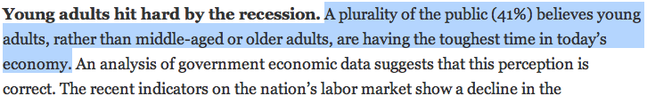
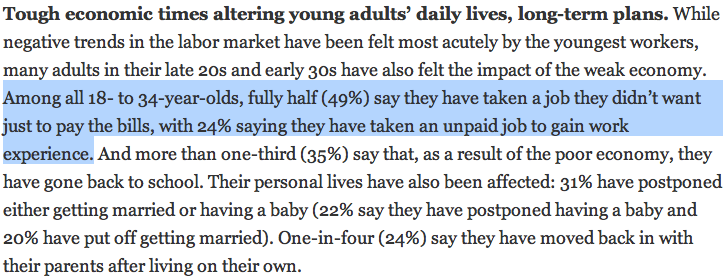
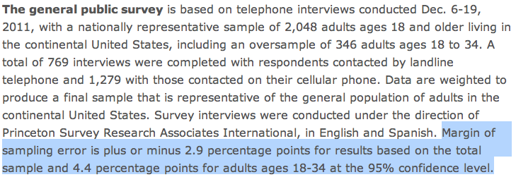
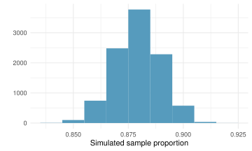
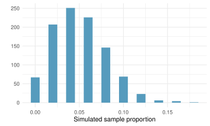
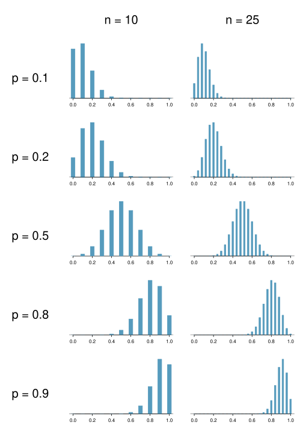
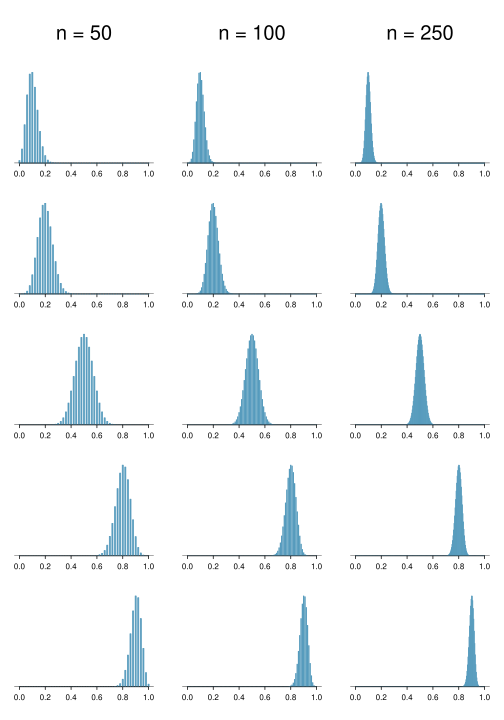
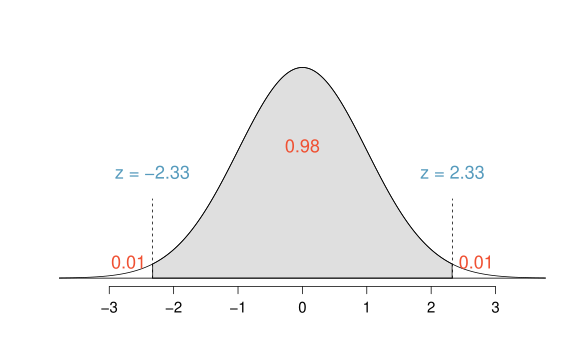

5 Cơ sở suy diễn thống kê
5.1 Ước lượng điểm và độ biến thiên mẫu
Ước lượng điểm và sai số
Chúng ta thường quan tâm đến các tham số quần thể (population parameters).
Rất khó để thu thập dữ liệu trên toàn bộ quần thể, vì vậy chúng ta sử dụng các thống kê mẫu (sample statistics) làm các ước lượng điểm (point estimates) cho các tham số quần thể chưa biết mà chúng ta quan tâm.
Sai số (Error) trong ước lượng = sự khác biệt giữa tham số quần thể và thống kê mẫu.
Độ chệch (Bias) là xu hướng hệ thống dẫn đến việc ước lượng cao hơn hoặc thấp hơn tham số thực của quần thể.
Sai số mẫu (Sampling error) mô tả mức độ một ước lượng có xu hướng thay đổi từ mẫu này sang mẫu khác.
Phần lớn thống kê tập trung vào việc hiểu và định lượng sai số mẫu, và kích thước mẫu (sample size) rất hữu ích trong việc định lượng sai số này.
Giả sử chúng ta lấy mẫu ngẫu nhiên 1.000 người lớn từ mỗi bang ở Hoa Kỳ. Bạn kỳ vọng giá trị trung bình mẫu về chiều cao của họ sẽ giống nhau, hơi khác nhau hay rất khác nhau?
Không giống nhau, nhưng chỉ hơi khác nhau.


Sai số biên

41% \(\pm\) 2.9%: Chúng tôi tin tưởng 95% rằng có 38.1% đến 43.9% công chúng tin rằng những người trẻ tuổi, thay vì những người trung niên hoặc cao tuổi, đang gặp khó khăn nhất trong nền kinh tế hiện nay.
49% \(\pm\) 4.4%: Chúng tôi tin tưởng 95% rằng có 44.6% đến 53.4% những người từ 18-34 tuổi đã chấp nhận một công việc họ không muốn chỉ để chi trả các hóa đơn.
✍ Luyện tập
Giả sử tỷ lệ người trưởng thành ở Mỹ ủng hộ việc mở rộng năng lượng mặt trời là p = 0.88, đây là tham số chúng ta quan tâm. Một người trưởng thành ở Mỹ được chọn ngẫu nhiên có nhiều khả năng hay ít khả năng ủng hộ việc mở rộng năng lượng mặt trời hơn?
Nhiều khả năng hơn.
Giả sử rằng bạn không có quyền truy cập vào toàn bộ quần thể người trưởng thành ở Mỹ, một kịch bản rất dễ xảy ra. Để ước tính tỷ lệ người trưởng thành ở Mỹ ủng hộ việc mở rộng năng lượng mặt trời, bạn có thể lấy mẫu từ quần thể và sử dụng tỷ lệ mẫu của mình như là dự đoán tốt nhất cho tỷ lệ quần thể chưa biết.
Lấy mẫu, có thay thế, 1.000 người trưởng thành ở Mỹ từ quần thể, và ghi lại xem họ có ủng hộ việc mở rộng năng lượng mặt trời hay không.
Tìm tỷ lệ mẫu.
Vẽ đồ thị phân phối của các tỷ lệ mẫu thu được bởi các thành viên trong lớp.
Phân phối mẫu
Giả sử bạn lặp lại quy trình này nhiều lần và thu được nhiều giá trị \(\hat{p}\). Phân phối này được gọi là một phân phối mẫu (sampling distribution).

Hình dạng và tâm của phân phối này là gì? Dựa trên phân phối này, bạn nghĩ tỷ lệ thực của quần thể là bao nhiêu?
Phân phối này đơn đỉnh (unimodal) và gần như đối xứng. Một dự đoán hợp lý cho tỷ lệ thực của quần thể là tâm của phân phối này, xấp xỉ 0.88.
Các phân phối mẫu không bao giờ được quan sát trực tiếp
Trong các ứng dụng thực tế, chúng ta không bao giờ thực sự quan sát được phân phối mẫu, tuy nhiên sẽ rất hữu ích nếu luôn nghĩ về một ước lượng điểm là đến từ một phân phối giả định như vậy.
Hiểu về phân phối mẫu sẽ giúp chúng ta đặc trưng hóa và hiểu được ý nghĩa của các ước lượng điểm mà chúng ta quan sát được.
Định lý giới hạn trung tâm
Định lý giới hạn trung tâm (Central limit theorem)
Các tỷ lệ mẫu sẽ có phân phối xấp xỉ chuẩn với giá trị trung bình bằng tỷ lệ quần thể, \(p\), và sai số chuẩn (standard error) bằng \(\sqrt{\frac{p~(1-p)}{n}}\). \[ \hat{p} \sim N \left( mean = p, SE = \sqrt{\frac{p~(1-p)}{n}} \right) \]
Không phải ngẫu nhiên mà phân phối mẫu chúng ta thấy trước đó lại đối xứng và tập trung tại tỷ lệ thực của quần thể.
Chúng ta sẽ không đi sâu vào chứng minh chi tiết tại sao \(SE = \sqrt{\frac{p~(1-p)}{n}}\), nhưng lưu ý rằng khi \(n\) tăng thì \(SE\) giảm.
- Khi \(n\) tăng, các mẫu sẽ cho ra các giá trị \(\hat{p}\) nhất quán hơn, tức là độ biến thiên giữa các \(\hat{p}\) sẽ thấp hơn.
Điều kiện áp dụng CLT
Một số điều kiện nhất định phải được đáp ứng để CLT có thể áp dụng:
Tính độc lập (Independence): Các quan sát trong mẫu phải độc lập. Điều này khó kiểm chứng, nhưng sẽ có khả năng cao hơn nếu
- sử dụng phương pháp lấy mẫu/phân bổ ngẫu nhiên
Kích thước mẫu (Sample size): Nên có ít nhất 10 thành công dự kiến và 10 thất bại dự kiến trong mẫu quan sát được. Điều này khó kiểm chứng nếu bạn không biết tỷ lệ quần thể (hoặc không thể giả định một giá trị cho nó). Trong những trường hợp đó, chúng ta xem xét số lượng thành công và thất bại quan sát được phải đạt ít nhất là 10.
Áp dụng Định lý giới hạn trung tâm vào bối cảnh thực tế
Khi \(p\) chưa biết
CLT phát biểu rằng \(SE = \sqrt{\frac{p~(1-p)}{n}}\), với điều kiện \(np\) và \(n(1-p)\) ít nhất là 10, tuy nhiên chúng ta thường không biết giá trị của \(p\), tỷ lệ quần thể.
Trong những trường hợp này, chúng ta thay thế \(p\) bằng \(\hat{p}\).
Thêm chi tiết về Định lý giới hạn trung tâm
Khi \(p\) thấp
Giả sử chúng ta có một quần thể mà tỷ lệ thực là \(p = 0.05\), và chúng ta lấy các mẫu ngẫu nhiên kích thước \(n = 50\) từ quần thể này. Chúng ta tính tỷ lệ mẫu trong mỗi mẫu và vẽ đồ thị các tỷ lệ này. Bạn có kỳ vọng phân phối này sẽ gần như chuẩn không? Tại sao có hoặc tại sao không?
Không, điều kiện thành công-thất bại không được đáp ứng (\(50 * 0.05 = 2.5\)), do đó chúng ta không kỳ vọng phân phối mẫu sẽ gần như chuẩn.

Điều gì xảy ra khi \(np\) và/hoặc \(n(1-p) < 10\)?


Khi các điều kiện không được đáp ứng
Khi \(np\) hoặc \(n(1-p)\) nhỏ, phân phối rời rạc hơn.
Khi \(np\) hoặc \(n(1-p) < 10\), phân phối bị lệch (skewed) nhiều hơn.
Cả \(np\) và \(n(1-p)\) càng lớn, phân phối càng gần với phân phối chuẩn.
Khi cả \(np\) và \(n(1-p)\) đều rất lớn, tính rời rạc của phân phối hầu như không còn rõ rệt, và phân phối trông rất giống phân phối chuẩn.
Mở rộng khung làm việc cho các thống kê khác
- Chiến lược sử dụng một thống kê mẫu để ước lượng một tham số là rất phổ biến, và đó là chiến lược mà chúng ta có thể áp dụng cho các thống kê khác ngoài tỷ lệ.
- Lấy một mẫu ngẫu nhiên sinh viên tại một trường đại học và hỏi họ tham gia bao nhiêu hoạt động ngoại khóa để ước tính số lượng hoạt động ngoại khóa trung bình mà tất cả sinh viên trong trường này quan tâm.
- Các nguyên tắc và ý tưởng chung từ chương này cũng áp dụng cho các tham số khác, ngay cả khi các chi tiết thay đổi một chút.
5.2 Khoảng tin cậy cho một tỷ lệ
Khoảng tin cậy
Một phạm vi các giá trị hợp lý cho tham số quần thể được gọi là một khoảng tin cậy (confidence interval).
Việc chỉ sử dụng một thống kê mẫu để ước lượng một tham số giống như đánh cá trong một hồ nước đục bằng một chiếc lao, còn sử dụng một khoảng tin cậy giống như đánh cá bằng một chiếc lưới.
Chúng ta có thể phóng lao vào nơi chúng ta thấy cá nhưng có khả năng sẽ trượt. Nếu chúng ta quăng lưới vào khu vực đó, chúng ta có cơ hội tốt để bắt được cá.
- Nếu chúng ta báo cáo một ước lượng điểm, chúng ta có thể sẽ không trúng chính xác tham số quần thể. Nếu chúng ta báo cáo một phạm vi các giá trị hợp lý, chúng ta có cơ hội tốt để nắm bắt được tham số đó.
Xây dựng một khoảng tin cậy 95%
Cách Facebook phân loại sở thích của người dùng
Hầu hết các trang web thương mại (ví dụ: các nền tảng mạng xã hội, các cơ quan thông tấn, các nhà bán lẻ trực tuyến) đều thu thập dữ liệu về hành vi của người dùng và sử dụng dữ liệu này để cung cấp nội dung, đề xuất và quảng cáo có mục tiêu. Để hiểu liệu người Mỹ có nghĩ rằng cuộc sống của họ phù hợp với cách mà các hệ thống phân loại dựa trên thuật toán xếp loại họ hay không, Pew Research đã hỏi một mẫu đại diện gồm 850 người dùng Facebook Mỹ về mức độ chính xác mà họ cảm nhận đối với danh sách các danh mục mà Facebook đã liệt kê cho họ trên trang về các sở thích giả định của họ thực sự đại diện cho họ và sở thích của họ. 67% số người trả lời nói rằng các danh mục được liệt kê là chính xác. Hãy ước tính tỷ lệ thực của những người dùng Facebook Mỹ nghĩ rằng Facebook phân loại sở thích của họ một cách chính xác.
Cách Facebook phân loại sở thích của người dùng
\[ \hat{p} = 0.67 \qquad n = 850 \]
Khoảng tin cậy 95% xấp xỉ được định nghĩa là \[ ước~lượng~điểm \pm 1.96 \times SE \]
\[ SE = \sqrt{\frac{p(1-p)}{n}} = \sqrt{\frac{0.67 \times 0.33}{850}} \approx 0.016 \]
\[\begin{eqnarray*} \hat{p} \pm 1.96 \times SE &=& 0.67 \pm 1.96 \times 0.016 \\ &=& (0.67 - 0.03, 0.67 + 0.03) \\ &=& (0.64, 0.70) \end{eqnarray*}\]
Câu nào sau đây là cách diễn giải đúng về khoảng tin cậy này?
Chúng tôi tin tưởng 95% rằng
- 64% đến 67% người dùng Facebook Mỹ trong mẫu này nghĩ rằng Facebook phân loại sở thích của họ chính xác.
- 64% đến 67% tất cả người dùng Facebook Mỹ nghĩ rằng Facebook phân loại sở thích của họ chính xác (Đáp án đúng)
- có 64% đến 67% khả năng một người dùng Facebook Mỹ được chọn ngẫu nhiên có sở thích được phân loại chính xác.
- có 64% đến 67% khả năng 95% sở thích của người dùng Facebook Mỹ được phân loại chính xác.
Tin tưởng 95% có nghĩa là gì?
Giả sử chúng ta lấy nhiều mẫu và xây dựng một khoảng tin cậy từ mỗi mẫu bằng cách sử dụng phương trình \(ước~lượng~điểm \pm 1.96 \times SE\).
Khi đó khoảng 95% các khoảng tin cậy đó sẽ chứa tỷ lệ thực của quần thể (\(p\)).
Độ rộng của một khoảng
Nếu chúng ta muốn chắc chắn hơn rằng chúng ta nắm bắt được tham số quần thể, tức là tăng mức tin cậy của mình, chúng ta nên sử dụng một khoảng rộng hơn hay một khoảng hẹp hơn?
Một khoảng rộng hơn.
Bạn có thấy nhược điểm nào khi sử dụng một khoảng rộng hơn không?

Nếu khoảng quá rộng, nó có thể không cung cấp nhiều thông tin.
Thay đổi mức tin cậy
\[ ước~lượng~điểm \pm z^\star \times SE \]
Trong một khoảng tin cậy, \(z^\star \times SE\) được gọi là sai số biên (margin of error), và đối với một mẫu nhất định, sai số biên thay đổi khi mức tin cậy thay đổi.
Để thay đổi mức tin cậy, chúng ta cần điều chỉnh \(z^\star\) trong công thức trên.
Các mức tin cậy thường được sử dụng trong thực tế là 90%, 95%, 98% và 99%.
Đối với khoảng tin cậy 95%, \(z^\star = 1.96\).
Tuy nhiên, bằng cách sử dụng phân phối chuẩn chuẩn hóa (standard normal) (\(z\)), ta có thể tìm thấy \(z^\star\) phù hợp cho bất kỳ mức tin cậy nào.
Điểm Z nào dưới đây là \(z^\star\) phù hợp khi tính toán khoảng tin cậy 98%?
- \(Z = 2.05\)
- \(Z = 1.96\)
- \(Z = 2.33\) (Đáp án đúng)
- \(Z = -2.33\)
- \(Z = -1.65\)

Diễn giải các khoảng tin cậy
Các khoảng tin cậy …
luôn nói về quần thể
không phải là các phát biểu về xác suất
chỉ nói về các tham số quần thể, không phải các quan sát riêng lẻ
chỉ đáng tin cậy nếu thống kê mẫu làm cơ sở cho chúng là một ước lượng không chệch của tham số quần thể
5.3 Kiểm định giả thuyết cho một tỷ lệ
Khung làm việc cho kiểm định giả thuyết
Nhớ lại khi…
Thí nghiệm phân biệt đối xử giới tính:
| Đề bạt (Promotion) | |||
|---|---|---|---|
| Được đề bạt | Không được đề bạt | Tổng | |
| Giới tính | Nam | 21 | 3 |
| Nữ | 14 | 10 | |
| Tổng | 35 | 13 |
\[ \hat{p}_{nam} = 21 / 24 \approx 0.88 ~ \text{ và } ~ \hat{p}_{nữ} = 14 / 24 \approx 0.58 \]
Các giải thích khả dĩ: * Đề bạt và giới tính là độc lập, không có phân biệt đối xử giới tính, sự khác biệt quan sát được về tỷ lệ chỉ đơn giản là do ngẫu nhiên. \(\rightarrow\) giả thuyết không (null) - (không có gì đang diễn ra) * Đề bạt và giới tính là phụ thuộc, có phân biệt đối xử giới tính, sự khác biệt quan sát được về tỷ lệ không phải do ngẫu nhiên. \(\rightarrow\) giả thuyết đối (alternative) - (có gì đó đang diễn ra)
Kết quả

Vì khá khó xảy ra việc thu được các kết quả như dữ liệu thực tế hoặc một kết quả cực đoan hơn trong các mô phỏng (tỷ lệ đề bạt ở nam cao hơn nữ 30% trở lên), chúng tôi đã quyết định bác bỏ giả thuyết không để ủng hộ giả thuyết đối.
Tóm tắt: khung làm việc cho kiểm định giả thuyết
Chúng ta bắt đầu với một giả thuyết không (null hypothesis - \(H_0\)) đại diện cho hiện trạng (status quo).
Chúng ta cũng có một giả thuyết đối (alternative hypothesis - \(H_A\)) đại diện cho câu hỏi nghiên cứu của mình, tức là những gì chúng ta đang kiểm định.
Chúng ta thực hiện kiểm định giả thuyết dưới giả định rằng giả thuyết không là đúng, thông qua mô phỏng hoặc các phương pháp truyền thống dựa trên định lý giới hạn trung tâm (sắp được trình bày…).
Nếu kết quả kiểm định cho thấy dữ liệu không cung cấp bằng chứng thuyết phục cho giả thuyết đối, chúng ta giữ nguyên giả thuyết không. Nếu có, chúng ta bác bỏ giả thuyết không để ủng hộ giả thuyết đối.
Chúng ta sẽ giới thiệu chính thức khung làm việc cho kiểm định giả thuyết bằng một ví dụ về việc kiểm định một khẳng định về giá trị trung bình của quần thể.
Kiểm định các giả thuyết sử dụng khoảng tin cậy
Trước đó, chúng ta đã tính toán khoảng tin cậy 95% cho tỷ lệ người dùng Facebook Mỹ nghĩ rằng Facebook phân loại sở thích của họ chính xác là từ 64% đến 67%. Dựa trên khoảng tin cậy này, liệu dữ liệu có ủng hộ giả thuyết rằng đa số người dùng Facebook Mỹ nghĩ rằng Facebook phân loại sở thích của họ chính xác hay không.
Các giả thuyết liên quan là:
- \(H_0\): \(p = 0.50\): 50% người dùng Facebook Mỹ nghĩ rằng Facebook phân loại sở thích của họ chính xác
- \(H_A\): \(p > 0.50\): Hơn 50% người dùng Facebook Mỹ nghĩ rằng Facebook phân loại sở thích của họ chính xác
Giá trị không (null value) không nằm trong khoảng tin cậy \(\rightarrow\) bác bỏ giả thuyết không.
Đây là một cách tiếp cận nhanh chóng cho kiểm định giả thuyết, nhưng nó không cho chúng ta biết khả năng xảy ra của một số kết quả nhất định dưới giả thuyết không (giá trị p).
Sai lầm trong quyết định
Sai lầm trong quyết định
Các kiểm định giả thuyết không phải là không có sai sót.
Trong hệ thống tòa án, những người vô tội đôi khi bị kết án sai và những kẻ có tội đôi khi được tự do.
Tương tự như vậy, chúng ta cũng có thể đưa ra quyết định sai lầm trong các kiểm định giả thuyết thống kê.
Sự khác biệt là chúng ta có các công cụ cần thiết để định lượng tần suất chúng ta mắc sai lầm trong thống kê.
Có hai giả thuyết cạnh tranh: giả thuyết không và giả thuyết đối. Trong một kiểm định giả thuyết, chúng ta đưa ra quyết định về giả thuyết nào có thể đúng, nhưng lựa chọn của chúng ta có thể sai.
| Quyết định | ||
|---|---|---|
| không bác bỏ \(H_0\) | bác bỏ \(H_0\) | |
| Sự thật: \(H_0\) đúng | \(\checkmark\) | Sai lầm loại 1 |
| Sự thật: \(H_A\) đúng | Sai lầm loại 2 | \(\checkmark\) |
Sai lầm loại 1 (Type 1 Error) là bác bỏ giả thuyết không khi \(H_0\) thực sự đúng.
Sai lầm loại 2 (Type 2 Error) là không bác bỏ giả thuyết không khi \(H_A\) thực sự đúng.
Chúng ta (hầu như) không bao giờ biết liệu \(H_0\) hay \(H_A\) đúng, nhưng chúng ta cần xem xét tất cả các khả năng.
Kiểm định giả thuyết giống như một phiên tòa
Nếu chúng ta lại nghĩ về một kiểm định giả thuyết như một phiên tòa hình sự thì việc đóng khung phán quyết theo các giả thuyết không và đối là điều hợp lý: \[\begin{align*} H_0&:\text{ Bị cáo vô tội} \\ H_A&:\text{ Bị cáo có tội} \end{align*}\]
Loại sai lầm nào đang được mắc phải trong các trường hợp sau đây?
Tuyên bố bị cáo vô tội trong khi họ thực sự có tội: Sai lầm loại 2
Tuyên bố bị cáo có tội trong khi họ thực sự vô tội: Sai lầm loại 1
Bạn nghĩ sai lầm nào là tồi tệ hơn? “thà để mười kẻ có tội trốn thoát còn hơn để một người vô tội phải chịu khổ” – William Blackstone
Tỷ lệ sai lầm loại 1
Theo quy tắc chung, chúng ta bác bỏ \(H_0\) khi giá trị p nhỏ hơn 0.05, tức là chúng ta sử dụng một mức ý nghĩa (significance level) là 0.05, \(\alpha = 0.05\).
Điều này có nghĩa là, đối với những trường hợp mà \(H_0\) thực sự đúng, chúng ta không muốn bác bỏ nó một cách sai lầm quá 5% số lần đó.
Nói cách khác, khi sử dụng mức ý nghĩa 5%, có khoảng 5% khả năng mắc sai lầm loại 1 nếu giả thuyết không là đúng. \[ P(\text{Sai lầm loại 1 | $H_0$ đúng}) = \alpha \]
Đây là lý do tại sao chúng ta ưu tiên các giá trị nhỏ của \(\alpha\) – việc tăng \(\alpha\) sẽ làm tăng tỷ lệ sai lầm loại 1.
Kiểm định chính thức sử dụng giá trị p
Các danh mục sở thích trên Facebook
Cùng cuộc khảo sát đó đã hỏi 850 người trả lời về mức độ thoải mái của họ khi Facebook tạo ra một danh sách các danh mục cho họ. 41% số người trả lời cho biết họ thấy thoải mái. Liệu những dữ liệu này có cung cấp bằng chứng thuyết phục rằng tỷ lệ người dùng Facebook Mỹ thấy thoải mái với việc Facebook tạo ra danh sách các danh mục sở thích là khác 50% hay không?
Thiết lập các giả thuyết
Tham số quan tâm là tỷ lệ của tất cả người dùng Facebook Mỹ thấy thoải mái với việc Facebook tạo ra các danh mục sở thích cho họ.
Có thể có hai giải thích tại sao tỷ lệ mẫu của chúng ta thấp hơn 0.50 (thiểu số).
- Tỷ lệ thực của quần thể khác 0.50.
- Tỷ lệ thực của quần thể là 0.50, và sự khác biệt giữa tỷ lệ thực của quần thể và tỷ lệ mẫu chỉ đơn giản là do độ biến thiên mẫu tự nhiên.
Thiết lập các giả thuyết
Chúng ta bắt đầu với giả định rằng 50% người dùng Facebook Mỹ thấy thoải mái với việc Facebook tạo ra các danh mục sở thích cho họ \[ H_0:~p = 0.50 \]
Chúng ta kiểm định khẳng định rằng tỷ lệ người dùng Facebook Mỹ thấy thoải mái với việc Facebook tạo ra các danh mục sở thích cho họ là khác 50% \[ H_A:~p \ne 0.50 \]
Các danh mục sở thích trên Facebook - điều kiện
Điều nào sau đây không phải là một điều kiện cần được đáp ứng để tiến hành kiểm định giả thuyết này?
Những người trả lời trong mẫu phải độc lập với nhau về việc họ có cảm thấy thoải mái hay không với việc sở thích của họ bị Facebook phân loại.
Việc lấy mẫu phải được thực hiện một cách ngẫu nhiên.
Kích thước mẫu phải nhỏ hơn 10% quần thể của tất cả người dùng Facebook Mỹ.
Nên có ít nhất 30 người trả lời trong mẫu. (Đáp án đúng)
Nên có ít nhất 10 thành công dự kiến và 10 thất bại dự kiến.
Thống kê kiểm định
Để đánh giá xem giá trị trung bình mẫu quan sát được có bất thường đối với phân phối mẫu theo giả thuyết hay không, chúng ta xác định xem nó cách giá trị không bao nhiêu sai số chuẩn, giá trị này còn được gọi là thống kê kiểm định (test statistic).
\[ \hat{p} \sim N \left( \mu = 0.50, SE = \sqrt{\frac{0.50 \times 0.50}{850} } \right) \]
\[ Z = \frac{0.41 - 0.50}{0.0171} = -5.26 \]
Tỷ lệ mẫu cách giá trị theo giả thuyết 5.26 lần sai số chuẩn. Điều này có được coi là thấp một cách bất thường không? Tức là kết quả có ý nghĩa thống kê (statistically significant) không?
Có, và chúng ta có thể định lượng mức độ bất thường của nó bằng cách sử dụng giá trị p (p-value).
Giá trị p
Sau đó, chúng ta sử dụng thống kê kiểm định này để tính toán giá trị p (p-value), xác suất quan sát được dữ liệu ít nhất là thuận lợi cho giả thuyết đối như tập dữ liệu hiện tại của chúng ta, nếu giả thuyết không là đúng.
Nếu giá trị p thấp (thấp hơn mức ý nghĩa \(\alpha\), thường là 5%), chúng ta nói rằng sẽ rất khó xảy ra việc quan sát được dữ liệu nếu giả thuyết không là đúng, và do đó bác bỏ \(H_0\).
Nếu giá trị p cao (cao hơn \(\alpha\)), chúng ta nói rằng có khả năng quan sát được dữ liệu ngay cả khi giả thuyết không là đúng, và do đó không bác bỏ \(H_0\).
Các danh mục sở thích trên Facebook - giá trị p
Giá trị p (p-value): xác suất quan sát được dữ liệu ít nhất là thuận lợi cho \(H_A\) như tập dữ liệu hiện tại của chúng ta (một tỷ lệ mẫu thấp hơn 0.41), nếu trên thực tế \(H_0\) là đúng (tỷ lệ thực của quần thể là 0.50).
\[ P(\hat{p} < 0.41~\text{ hoặc }~\hat{p} > 0.59~|~p = 0.50) = P(|Z| > 5.26) < 0.0001 \]
Các danh mục sở thích trên Facebook - Đưa ra quyết định
Giá trị p < 0.0001
- Nếu 50% tất cả người dùng FB Mỹ thấy thoải mái với việc FB tạo ra các danh mục sở thích này, thì có chưa đến 0.01% khả năng quan sát được một mẫu ngẫu nhiên gồm 850 người dùng Facebook Mỹ mà 41% trở xuống hoặc 59% trở lên thấy thoải mái với điều đó.
- Xác suất khá thấp để nghĩ rằng tỷ lệ mẫu quan sát được, hoặc một kết quả cực đoan hơn, có khả năng xảy ra do ngẫu nhiên.
Vì giá trị p thấp (thấp hơn 5%), chúng ta bác bỏ \(H_0\).
Dữ liệu cung cấp bằng chứng thuyết phục rằng tỷ lệ người dùng FB Mỹ thấy thoải mái với việc FB tạo ra danh sách các danh mục sở thích cho họ là khác 50%.
Sự khác biệt giữa giá trị không là 0.50 và tỷ lệ mẫu quan sát được là 0.41 không phải do ngẫu nhiên hay độ biến thiên mẫu.
Chọn một mức ý nghĩa
Mặc dù mức truyền thống là 0.05, nhưng việc điều chỉnh mức ý nghĩa dựa trên ứng dụng cụ thể là điều hữu ích.
Chọn một mức nhỏ hơn hoặc lớn hơn 0.05 tùy thuộc vào hậu quả của bất kỳ kết luận nào rút ra từ kiểm định.
Nếu việc mắc Sai lầm loại 1 là nguy hiểm hoặc đặc biệt tốn kém, chúng nên chọn một mức ý nghĩa nhỏ (ví dụ: 0.01). Trong kịch bản này, chúng ta muốn rất thận trọng trong việc bác bỏ giả thuyết không, vì vậy chúng ta yêu cầu bằng chứng rất mạnh mẽ ủng hộ \(H_A\) trước khi bác bỏ \(H_0\).
Nếu Sai lầm loại 2 tương đối nguy hiểm hơn hoặc tốn kém hơn nhiều so với Sai lầm loại 1, thì chúng ta nên chọn một mức ý nghĩa cao hơn (ví dụ: 0.10). Ở đây chúng ta muốn thận trọng về việc không bác bỏ được \(H_0\) khi giả thuyết không thực sự sai.
Kiểm định giả thuyết một phía so với hai phía
Trong các kiểm định giả thuyết hai phía (two sided), chúng ta quan tâm đến việc liệu \(p\) nằm trên hay dưới một giá trị không \(p_0\) nào đó: \(H_A: p \ne p_0\).
Trong các kiểm định giả thuyết một phía (one sided), chúng ta quan tâm đến việc \(p\) khác với giá trị không \(p_0\) theo một hướng (và không phải hướng kia):
- Nếu việc phát hiện tham số quần thể nhỏ hơn \(p_0\) mới có giá trị, thì \(H_A: p < p_0\).
- Nếu việc phát hiện tham số quần thể lớn hơn \(p_0\) mới có giá trị, thì \(H_A: p > p_0\).
Các kiểm định hai phía thường phù hợp hơn vì chúng ta thường cũng muốn phát hiện xem liệu dữ liệu có đi theo hướng ngược lại rõ rệt với giả thuyết đối của mình hay không.